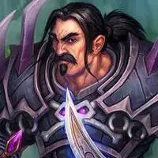
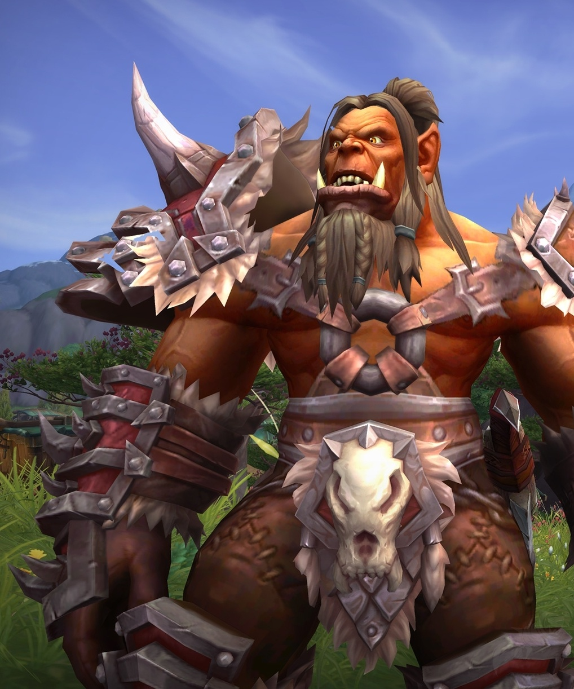
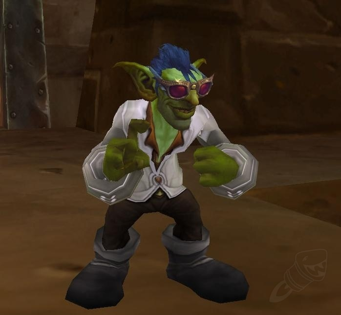

| Alianzas | |
|---|---|
|

Humano:
El reino humano de Ventormenta es la columna vertebral de la Alianza. La voluntad de esta ciudad por colaborar con los demás mediante la diplomacia ha demostrado ser uno de sus puntos fuertes. Sus ciudadanos se rigen por los valores de honor y justicia para defender sus asentamientos y a la propia Alianza contra cualquier amenaza. |
Gnomo:
Los astutos, valerosos y con frecuencia excéntricos gnomos presentan una paradoja única entre las razas civilizadas de Azeroth. Su admirable optimismo frente a las calamidades simboliza el espíritu inquebrantable de los gnomos, y su creatividad e ingenio ilimitados solo es comparable con su compromiso con la causa de la Alianza. |
Hordas |
|

Orco:
Los orcos vivían antaño como clanes chamánicos en el exuberante planeta de Draenor. Kil’jaeden, un señor demoníaco de la Legión Ardiente, los corrompió e invadieron el mundo de Azeroth. Con el paso del tiempo fueron capaces de liberarse de las influencias demoníacas, se asentaron en Kalimdor y fundaron su capital, Orgrimmar, una ciudad desde donde luchan por encontrar su lugar en el mundo que quisieron conquistar. |

Goblin:
La astucia y codicia de los goblins los convierten en maestros del mercantilismo. Ahora que han renovado antiguos acuerdos con sus socios y antiguos aliados, los goblins del Cártel Pantoque han sido recibidos en la Horda con los brazos abiertos. Al perfeccionar su astucia natural hasta el extremo, esperan usar sus explosivos inventos para dominar el mundo (o, al menos, apropiarse de un porcentaje rentable de él). |